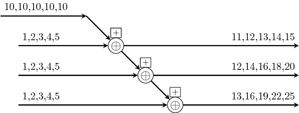
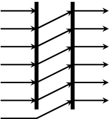
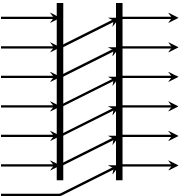
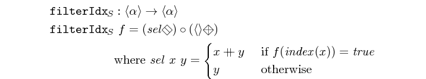
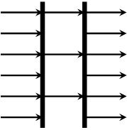
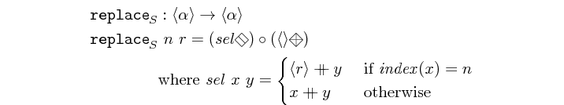

| Copyright | (c) George Ungureanu KTH/ICT/ESY 2016 |
|---|---|
| License | BSD-style (see the file LICENSE) |
| Maintainer | ugeorge@kth.se |
| Stability | experimental |
| Portability | portable |
| Safe Haskell | Safe |
| Language | Haskell2010 |
ForSyDe.Atom.Skeleton.Vector
Contents
Description
This module defines the data type Vector as a categorical type,
and implements the atoms for the Skeleton
class. Algorithmic skeletons for Vector are mostly described in
their factorized form, which ensures that they are catamorphisms
(see the factorization
theorem). Where efficiency or practicality is a concern, some
skeletons are implemented as recurrences. One can still prove that
they are catamorphisms through alternative theorems (see
[Skillicorn05]).
IMPORTANT!!! see the naming convention rules on how to interpret, use and develop your own constructors.
Synopsis
- data Vector a
- null :: Vector a
- unit :: a -> Vector a
- (<++>) :: Vector a -> Vector a -> Vector a
- vector :: [a] -> Vector a
- fromVector :: Vector a -> [a]
- indexes :: Vector Integer
- isNull :: Vector a -> Bool
- (<:) :: Vector a -> a -> Vector a
- farm22 :: (a1 -> a2 -> (b1, b2)) -> Vector a1 -> Vector a2 -> (Vector b1, Vector b2)
- reduce :: (a -> a -> a) -> Vector a -> a
- prefix :: (b -> b -> b) -> Vector b -> Vector b
- suffix :: (b -> b -> b) -> Vector b -> Vector b
- pipe :: Vector (a -> a) -> a -> a
- (=/=) :: Vector (a -> a) -> a -> Vector a
- recur :: Vector (a -> a) -> a -> Vector a
- cascade2 :: (a2 -> a1 -> a -> a -> a) -> Vector (Vector a2) -> Vector (Vector a1) -> Vector a -> Vector a -> Vector a
- mesh2 :: (a2 -> a1 -> a -> a -> a) -> Vector (Vector a2) -> Vector (Vector a1) -> Vector a -> Vector a -> Vector (Vector a)
- length :: Num p => Vector a -> p
- index :: Vector a2 -> Vector Integer
- fanout :: t -> Vector t
- fanoutn :: (Ord t, Num t) => t -> a -> Vector a
- generate :: (Ord t, Num t) => t -> (a -> a) -> a -> Vector a
- iterate :: (Ord t, Num t) => t -> (a -> a) -> a -> Vector a
- first :: Vector a -> a
- last :: Vector a -> a
- inits :: Vector a -> Vector (Vector a)
- tails :: Vector a -> Vector (Vector a)
- init :: Vector a -> Vector a
- tail :: Vector a -> Vector a
- concat :: Vector (Vector a) -> Vector a
- reverse :: Vector a -> Vector a
- group :: Integer -> Vector a -> Vector (Vector a)
- shiftr :: Vector a -> a -> Vector a
- shiftl :: Vector a -> a -> Vector a
- rotr :: Vector a -> Vector a
- rotl :: Vector a -> Vector a
- take :: Integer -> Vector a -> Vector a
- drop :: Integer -> Vector a -> Vector a
- takeWhile :: (a -> Bool) -> Vector a -> Vector a
- filterIdx :: (Integer -> Bool) -> Vector a -> Vector a
- odds :: Vector a -> Vector a
- evens :: Vector a -> Vector a
- stride :: Integer -> Integer -> Vector a -> Vector a
- get :: Integer -> Vector a -> Maybe a
- (<@) :: Vector a -> Integer -> Maybe a
- (<@!) :: Vector p -> Integer -> p
- gather1 :: Vector Integer -> Vector a -> Vector (Maybe a)
- (<@>) :: Vector a -> Vector Integer -> Vector (Maybe a)
- replace :: Integer -> a -> Vector a -> Vector a
- scatter :: Vector Integer -> Vector a -> Vector a -> Vector a
- bitrev :: Vector a -> Vector a
- duals :: Vector a -> (Vector a, Vector a)
- unduals :: Vector a -> Vector a -> Vector a
- zipx :: MoC e => Vector ((Vector a -> Vector a -> Vector a) -> Fun e (Vector a) (Fun e (Vector a) (Ret e (Vector a)))) -> Vector (Stream (e a)) -> Stream (e (Vector a))
- unzipx :: MoC e => (Vector a -> Vector (Ret e a)) -> Integer -> Stream (e (Vector a)) -> Vector (Stream (e a))
Vector data type
The Vector, or at least its interpretation, is the
exact equivalent of an infinite list, as defined in
[Bird97]. Its name though is borrowed
from [Reekie95], since it is more
suggestive in the context of process networks.
According to [Bird97], Vector
should be implemented as following:
data Vector a = Null -- null element
| Unit a -- singleton vector
| Vector a <++> Vector a -- concatenate two vectorsThis construction suggests the possibility of splitting a Vector
into multiple parts and evaluating it in parallel. Due to reasons
of efficiency, and to ensure that the structure is flat and
homogeneous, Vector is implemented using the same constructors as
an infinite list like in [Bird87] (see
below). When defining skeletons of vectors we will not use the real
constructors though, but the theoretical ones defined above and
provided as functions . This way we align ForSyDe-Atom's
Vector type with the categorical type theory and its theorems.
Another particularity of Vector is that it instantiates the
reduction atom =\= as a right fold, as it is the most efficient
implementation in the context of lazy evaluation. As a consequence
reduction is performed from right to left. This is noticeable
especially in the case of pipeline-based skeletons (where pipe
itself is a reduction with the right-associative composition
operator .) is performed from right to left, which
comes in natural when considering the order of function
composition. Thus for reduce-based skeletons (e.g. prefix,
suffix, recur, cascade, mesh) the result vectors shall be
read from end to beginning.
Constructors
| Null | Null element. Terminates a vector. |
| a :> (Vector a) infixr 3 | appends an element at the head of a vector. |
Instances
| Functor Vector Source # | Provides an implementation for |
| Applicative Vector Source # | Provides an implementation for |
| Foldable Vector Source # | Provides an implementation for |
Defined in ForSyDe.Atom.Skeleton.Vector.Core Methods fold :: Monoid m => Vector m -> m # foldMap :: Monoid m => (a -> m) -> Vector a -> m # foldr :: (a -> b -> b) -> b -> Vector a -> b # foldr' :: (a -> b -> b) -> b -> Vector a -> b # foldl :: (b -> a -> b) -> b -> Vector a -> b # foldl' :: (b -> a -> b) -> b -> Vector a -> b # foldr1 :: (a -> a -> a) -> Vector a -> a # foldl1 :: (a -> a -> a) -> Vector a -> a # elem :: Eq a => a -> Vector a -> Bool # maximum :: Ord a => Vector a -> a # minimum :: Ord a => Vector a -> a # | |
| Skeleton Vector Source # | Ensures that |
Defined in ForSyDe.Atom.Skeleton.Vector.Core | |
| Eq a => Eq (Vector a) Source # | |
| Read a => Read (Vector a) Source # | The vector 1 :> 2 :> Null is read using the string "<1,2>". |
| Show a => Show (Vector a) Source # | The vector 1 :> 2 :> Null is represented as <1,2>. |
| Plottable a => Plottable (Vector a) Source # | Vectors of plottable types |
| Plottable a => Plot (Vector a) Source # | vectors of coordinates |
"Constructors"
Theoretical constructors for the Vector type, used in the
definition of skeletons as catamorphisms.
(<++>) :: Vector a -> Vector a -> Vector a infixr 5 Source #
Constructs a vector by appending two existing vectors.
>>>unit 1 <++> unit 2<1,2>
Utilities
fromVector :: Vector a -> [a] Source #
Converts a vector to a list.
indexes :: Vector Integer Source #
Creates the infinite vector:
<1,2,3,4,...>
Used mainly for operation on indexes.
Skeletons
Algorithmic skeletons on vectors are mainly presented in terms
of compositions of the atoms associated with the
Skeleton Layer. When defining them,
we use the following operators:
where:
- (1) is the
unitconstructor, constructing a singleton vector. - (2) is the
<++>constructor, concatenating two vectors. - (3) is the
<@!>selector. The subscript notation is used to denote element at position n in a vector. - (4) suggests an arbitrary selector which returns a vector with
another one's elements, based on some indices. The shown example
is an alternative notation for the
tailskeleton.
Functional networks
This sub-category denotes skeletons (patterns) which are take
functions as arguments. If the functions are
MoC layer entities, i.e. processes, then these
patterns are capable of constructing parallel process
networks. Using the applicative mechanism, the designer has a
high degree of freedom when customizing process networks through
systematic partial application, rendering numerous possible
usages for the same pattern. To avoid over-encumbering the
figures, they depict small test cases, which might not expose the
full potential of the constructors.
see the naming convention rules on how to interpret, use and develop your own constructors.
Arguments
| :: (a1 -> a2 -> (b1, b2)) | function (e.g. process) |
| -> Vector a1 | first input vector |
| -> Vector a2 | second input vector |
| -> (Vector b1, Vector b2) | two output vectors |
farm is simply the Vector instance of the skeletom farm
pattern (see farm22). If the function taken
as argument is a process, then it creates a farm network of data
parallel processes.
Constructors: farm[1-4][1-4].
>>>let v1 = vector [1,2,3,4,5]>>>S.farm21 (+) v1 v1<2,4,6,8,10>>>>let s1 = SY.signal [1,2,3,4,5]>>>let v2 = vector [s1,s1,s1]>>>S.farm11 (comb11 (+1)) v2<{2,3,4,5,6},{2,3,4,5,6},{2,3,4,5,6}>>>>S.farm21 (\x -> comb11 (+x)) v1 v2<{2,3,4,5,6},{3,4,5,6,7},{4,5,6,7,8}>
reduce :: (a -> a -> a) -> Vector a -> a Source #
As the name suggests, it reduces a vector to an element based on an associative function. If the function is not associative, it can be treated like a pipeline.
Vector instantiates the skeletons for both
reduce and reducei.
>>>let v1 = vector [1,2,3,4,5]>>>S.reduce (+) v115>>>let s1 = SY.signal [1,2,3,4,5]>>>let s2 = SY.signal [10,10,10,10,10]>>>let v2 = vector [s1,s1,s1]>>>S.reduce (comb21 (+)) v2{3,6,9,12,15}>>>S.reducei (comb21 (+)) s2 v2{13,16,19,22,25}
prefix :: (b -> b -> b) -> Vector b -> Vector b Source #
prefix peforms the parallel prefix operation on a vector.
Equivalent process networks are constructed if processes are passed
as arguments.
Similar to reduce and reducei, two versions prefix and
prefixi are provided.
>>>let v1 = vector [1,2,3,4,5]>>>prefix (+) v1<15,14,12,9,5>>>>let s1 = SY.signal [1,2,3,4,5]>>>let s2 = SY.signal [10,10,10,10,10]>>>let v2 = vector [s1,s1,s1]>>>prefix (comb21 (+)) v2<{3,6,9,12,15},{2,4,6,8,10},{1,2,3,4,5}>>>>prefixi (comb21 (+)) s2 v2<{13,16,19,22,25},{12,14,16,18,20},{11,12,13,14,15}>

suffix :: (b -> b -> b) -> Vector b -> Vector b Source #
suffix peforms the parallel suffix operation on a vector.
Equivalent process networks are constructed if processes are passed
as arguments.
Similar to reduce and reducei, two versions suffix and
suffixi are provided.
>>>let v1 = vector [1,2,3,4,5]>>>suffix (+) v1<1,3,6,10,15>>>>let s1 = SY.signal [1,2,3,4,5]>>>let s2 = SY.signal [10,10,10,10,10]>>>let v2 = vector [s1,s1,s1]>>>suffix (comb21 (+)) v2<{1,2,3,4,5},{2,4,6,8,10},{3,6,9,12,15}>>>>suffixi (comb21 (+)) s2 v2<{11,12,13,14,15},{12,14,16,18,20},{13,16,19,22,25}>

Arguments
| :: Vector (a -> a) | vector of functions |
| -> a | input |
| -> a | output |
pipe creates a pipeline of functions from a vector. pipe
simply instantiates the =<<= atom whereas pipeX instantiate
their omologi from the ForSyDe.Atom.Skeleton module (see
pipe2).
OBS: the pipelining is done in the order dictated by the function composition operator: from right to left.
Constructors: pipe[1-4].
>>>let v1 = vector [(+1),(+1),(+1)]>>>S.pipe v1 14>>>let s1 = SY.signal [1,2,3,4]>>>let v2 = vector [1,2,3,4]>>>S.pipe1 (\x -> comb11 (+x)) v2 s1{11,12,13,14}
recur creates a systolic array from a vector of
functions. Just like pipe and pipeX, there exists a raw
recur version with an infix operator =/=, and the enhanced
recurX which is meant for systematic partial application of a
function on an arbitrary number of vectors until the desired vector
of functions is obtained.
Constructors: (=/=), recur, recuri, recur[1-4][1-4].
>>>let v1 = vector [(+1),(+1),(+1)]>>>recur v1 1<4,3,2>>>>recuri v1 1<4,3,2,1>>>>let s1 = SY.signal [1,2,3,4]>>>let v2 = vector [1,2,3,4]>>>recur1 (\x -> comb11 (+x)) v2 s1<{11,12,13,14},{10,11,12,13},{8,9,10,11},{5,6,7,8}>

Arguments
| :: (a2 -> a1 -> a -> a -> a) |
|
| -> Vector (Vector a2) | fills in the first argument in the function above |
| -> Vector (Vector a1) | fills in the second argument in the function above |
| -> Vector a | first input vector (e.g. of signals) |
| -> Vector a | second input vector (e.g. of signals) |
| -> Vector a | output |
cascade creates a "cascading mesh" as a result of piping a
vector into a vector of recur arrays.
Constructors: cascade, cascade[1-4].
>>>let v1 = vector [1,2,3,4]>>>cascade (+) v1 v1<238,119,49,14>>>>let s1 = SY.signal [1,2,3,4]>>>let vs = vector [s1, s1, s1]>>>cascade (comb21 (+)) vs vs<{20,40,60,80},{10,20,30,40},{4,8,12,16}>>>>let vv = vector [vector [1,-1,1], vector [-1,1,-1], vector [1,-1,1] ]>>>cascade1 (\x -> comb21 (\y z-> x*(y+z))) vv vs vs<{16,32,48,64},{8,16,24,32},{-2,-4,-6,-8}>
Arguments
| :: (a2 -> a1 -> a -> a -> a) |
|
| -> Vector (Vector a2) | fills in the first argument in the function above |
| -> Vector (Vector a1) | fills in the second argument in the function above |
| -> Vector a | first input vector (e.g. of signals) |
| -> Vector a | second input vector (e.g. of signals) |
| -> Vector (Vector a) | output, a 2D vector |
mesh creates a 2D systolic array as a result of piping a vector
into a vector of 1D systolic arrays.
Constructors: mesh, mesh[1-4].
>>>let v1 = vector [1,2,3,4]>>>mesh (+) v1 v1<<238,119,49,14>,<119,70,35,13>,<49,35,22,11>,<14,13,11,8>>>>>let s1 = SY.signal [1,2,3,4]>>>let vs = vector [s1, s1, s1]>>>mesh (comb21 (+)) vs vs<<{20,40,60,80},{10,20,30,40},{4,8,12,16}>,<{10,20,30,40},{6,12,18,24},{3,6,9,12}>,<{4,8,12,16},{3,6,9,12},{2,4,6,8}>>>>>let vv = vector [vector [1,-1,1], vector [-1,1,-1], vector [1,-1,1]]>>>mesh1 (\x -> comb21 (\y z-> x*(y+z))) vv vs vs<<{16,32,48,64},{8,16,24,32},{-2,-4,-6,-8}>,<{8,16,24,32},{-6,-12,-18,-24},{-3,-6,-9,-12}>,<{-2,-4,-6,-8},{-3,-6,-9,-12},{2,4,6,8}>>

Queries
Queries return various information about a vector. They are also built as skeletons.
length :: Num p => Vector a -> p Source #
returns the number of elements in a value.
>>>length $ vector [1,2,3,4,5]5
index :: Vector a2 -> Vector Integer Source #
returns a vector with the indexes from another vector.
>>>index $ vector [1,1,1,1,1,1,1]<1,2,3,4,5,6,7>
Generators
Generators are specific applications of the prefix or
suffix skeletons.
fanout :: t -> Vector t Source #
fanout repeats an element. As a process network it distributes
the same value or signal to all the connected processes down the
line. Depending on the target platform and the refinement decisions
involved, it may be interpreted in the following implementations:
- global or shared memory in case of a massively parallel platform (e.g. GPU)
- a (static) memory or cache location in memory-driven architectures (e.g. CPU)
- a fanout in case of a HDL system
- a broadcast in case of a distributed system
Permutators
Permutators perform operations on the very structure of vectors, and make heavy use of the vector constructors.
inits :: Vector a -> Vector (Vector a) Source #
creates a vector of all the initial segments in a vector.
>>>inits $ vector [1,2,3,4,5]<<1>,<1,2>,<1,2,3>,<1,2,3,4>,<1,2,3,4,5>>
tails :: Vector a -> Vector (Vector a) Source #
creates a vector of all the final segments in a vector.
>>>tails $ vector [1,2,3,4,5]<<1,2,3,4,5>,<2,3,4,5>,<3,4,5>,<4,5>,<5>>
init :: Vector a -> Vector a Source #
Returns the initial segment of a vector.
>>>init $ vector [1,2,3,4,5]<1,2,3,4>
tail :: Vector a -> Vector a Source #
Returns the tail of a vector.
>>>tail $ vector [1,2,3,4,5]<2,3,4,5>
concat :: Vector (Vector a) -> Vector a Source #
concatenates a vector of vectors.
>>>concat $ vector [vector[1,2,3,4], vector[5,6,7]]<1,2,3,4,5,6,7>
reverse :: Vector a -> Vector a Source #
reverses the elements in a vector.
>>>reverse $ vector [1,2,3,4,5]<5,4,3,2,1>
group :: Integer -> Vector a -> Vector (Vector a) Source #
groups a vector into sub-vectors of n elements.
>>>group 3 $ vector [1,2,3,4,5,6,7,8]<<1,2,3>,<4,5,6>,<7,8>>
shiftr :: Vector a -> a -> Vector a Source #
right-shifts a vector with an element.
>>>vector [1,2,3,4] `shiftr` 8<8,1,2,3>
shiftl :: Vector a -> a -> Vector a Source #
left-shifts a vector with an element.
>>>vector [1,2,3,4] `shiftl` 8<2,3,4,8>
 

rotr :: Vector a -> Vector a Source #
rotates a vector to the right.
>>>rotr $ vector [1,2,3,4]<4,1,2,3>
rotl :: Vector a -> Vector a Source #
rotates a vector to the left.
>>>rotl $ vector [1,2,3,4]<2,3,4,1>
take :: Integer -> Vector a -> Vector a Source #
takes the first n elements of a vector.
>>>take 5 $ vector [1,2,3,4,5,6,7,8,9]<1,2,3,4,5>
drop :: Integer -> Vector a -> Vector a Source #
drops the first n elements of a vector.
>>>drop 5 $ vector [1,2,3,4,5,6,7,8,9]<6,7,8,9>
takeWhile :: (a -> Bool) -> Vector a -> Vector a Source #
takes the first elements in a vector until the first element that does not fulfill a predicate.
>>>takeWhile (<5) $ vector [1,2,3,4,5,6,7,8,9]<1,2,3,4>
filterIdx :: (Integer -> Bool) -> Vector a -> Vector a Source #
returns a vector containing only the elements of another vector whose index satisfies a predicate.
>>>filterIdx (\x -> x `mod` 3 == 0) $ vector [0,1,2,3,4,5,6,7,8,9]<2,5,8>


does a stride-selection on a vector.
>>>stride 1 3 $ vector [1,2,3,4,5,6,7,8,9]<1,4,7>
get :: Integer -> Vector a -> Maybe a Source #
returns the n-th element in a vector, or Nothing if n > l.
>>>get 3 $ vector [1,2,3,4,5]Just 3
selects the elements in a vector at the incexes contained by another vector.
The following versions of this skeleton are available, the number
suggesting how many nested vectors it is operating upon: gather[1-5]
>>>let ix = vector [vector [1,3,4], vector [3,5,1], vector [5,8,9]]>>>let v = vector [11,12,13,14,15]>>>gather2 ix v<<Just 11,Just 13,Just 14>,<Just 13,Just 15,Just 11>,<Just 15,Nothing,Nothing>>
the same as gather1 but with flipped arguments
The following versions of this skeleton are available, the number suggesting how many nested vectors it is operating upon.
(<@>), (<<@>>), (<<<@>>>), (<<<<@>>>>), (<<<<<@>>>>>),
replace :: Integer -> a -> Vector a -> Vector a Source #
replaces the n-th element in a vector with another.
>>>replace 5 15 $ vector [1,2,3,4,5,6,7,8,9]<1,2,3,4,15,6,7,8,9>

scatter :: Vector Integer -> Vector a -> Vector a -> Vector a Source #
scatters the elements in a vector based on the indexes contained by another vector.
>>>scatter (vector [2,4,5]) (vector [0,0,0,0,0,0,0,0]) (vector [1,1,1])<0,1,0,1,1,0,0,0>
bitrev :: Vector a -> Vector a Source #
performs a bit-reverse permutation.

>>>bitrev $ vector ["000","001","010","011","100","101","110","111"]<"111","011","101","001","110","010","100","000">
duals :: Vector a -> (Vector a, Vector a) Source #
splits a vector in two equal parts.
>>>duals $ vector [1,2,3,4,5,6,7](<1,2,3>,<4,5,6>)
unduals :: Vector a -> Vector a -> Vector a Source #
concatenates a previously split vector. See also duals
Interfaces
Arguments
| :: MoC e | |
| => Vector ((Vector a -> Vector a -> Vector a) -> Fun e (Vector a) (Fun e (Vector a) (Ret e (Vector a)))) | vector of MoC-specific context wrappers for the function
|
| -> Vector (Stream (e a)) | input vector of signals |
| -> Stream (e (Vector a)) | output signal of vectors |
zipx is a template skeleton for "zipping" a vector of
signals. It synchronizes all signals (of the same MoC) in a vector
and outputs one signal with vectors of the synced values. For each
signal in the input vector it requires a function which
translates a partition of events (see ForSyDe.Atom.MoC) into
sub-vectors.
There exist helper intances of the zipx skeleton interface for
all supported MoCs.
unzipx :: MoC e => (Vector a -> Vector (Ret e a)) -> Integer -> Stream (e (Vector a)) -> Vector (Stream (e a)) Source #
unzipx is a template skeleton to unzip a signal carrying
vectors into a vector of multiple signals. It required a function
that splits a vector of values into a vector of event partitions
belonging to output signals. Unlike zipx, it also requires the
number of output signals. The reason for this is that it is
impossible to determine the length of the output vector without
"sniffing" the content of the input events, which is out of the
scope of skeletons and may lead to unsafe behavior. The length of
the output vector is needed in order to avoid infinite recurrence.
There exist helper intances of the unzipx skeleton interface for
all supported MoCs.